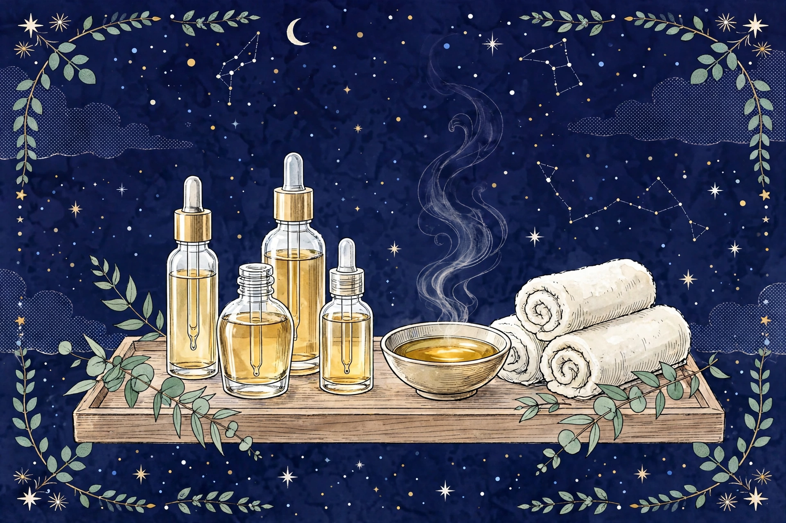
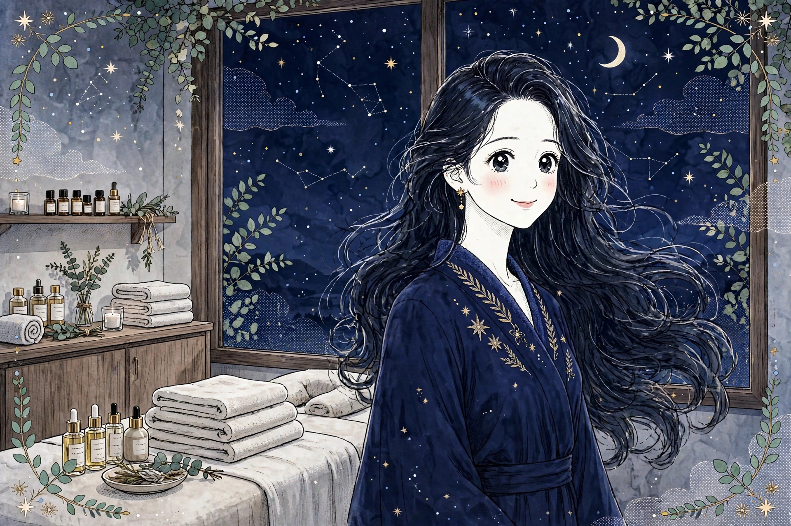
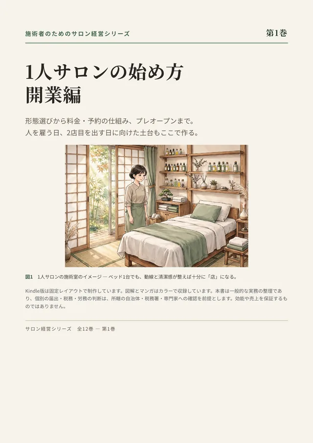
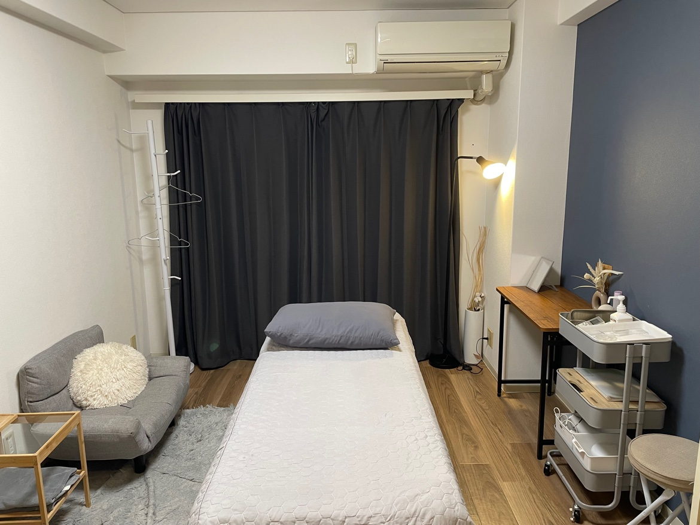
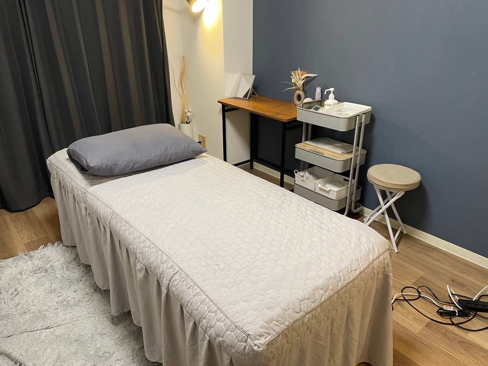
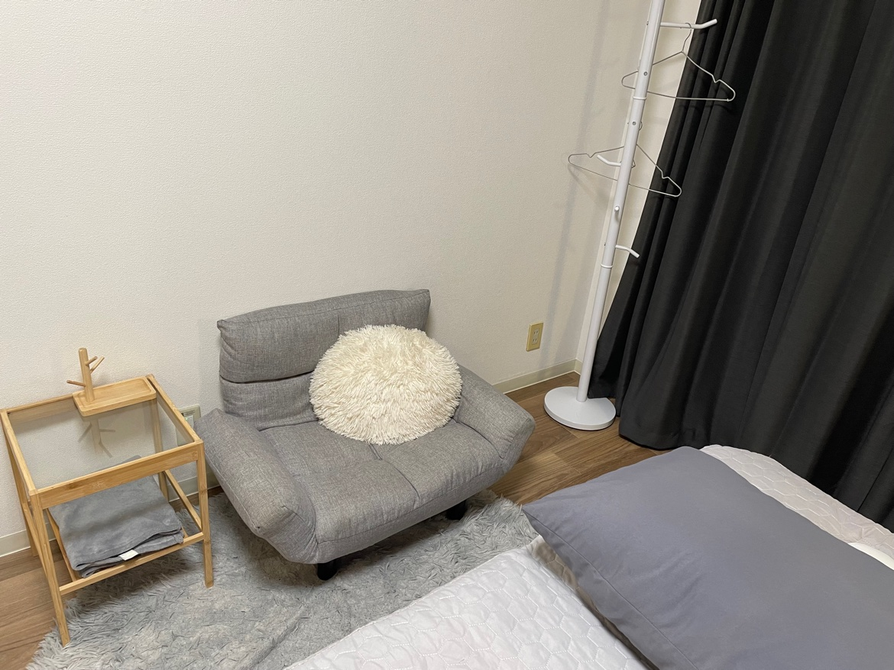
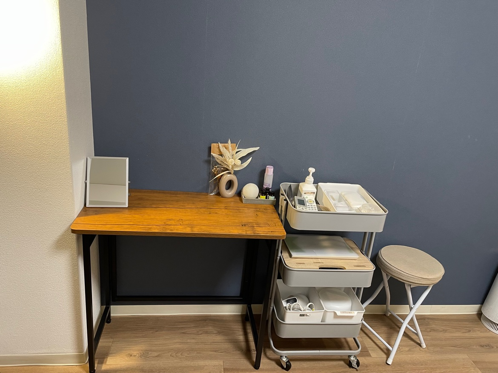

Oil Massage
オイルマッサージ
オイルを使って全身をゆったりとほぐす、当店の中心となる施術です。アロマセラピストの視点で、その日の気分や体調に合わせた香りをご提案します。大きな手のひらで包み込むような、しっかり届く圧が特徴です。
- 肩・背中・腰・脚など、気になる部位を重点的に
- 圧の強さは施術中いつでも調整できます
- 香りが苦手な方には無香料のオイルもご用意します
近日開院予定｜ご予約の受付はまだ開始していません
大阪・梅田｜女性専用オイルマッサージ・美容整体
仕事帰りの体に、深く届く90分。
大阪・梅田の女性専用サロン。東洋医学の知識を土台に、オイルマッサージと美容整体を組み合わせます。
施術歴30年・鍼灸師資格の男性セラピストが担当します。鍼灸施術は行わず、性的なサービスも一切行いません。

Safety & Trust
男性セラピストのサロンだからこそ、不安に感じる点を先にすべて明記します。隠さないことが、当店の約束です。
当店はリラクゼーションを目的としたサロンです。性的なサービスは一切行いません。施術範囲は事前にご説明し、ご希望に沿わない部位には触れません。ご不安な点は、予約時・来店時のどちらでも遠慮なくお伝えください。
施術中は、施術部位以外を大きめのタオルでしっかり覆います。お着替えは施術者が席を外してから行っていただき、準備ができてから入室します。圧の強さや触れてほしくない部位は、施術中いつでもお声がけください。
施術は資格と経歴を公開した男性セラピスト1名のみが担当します。施術歴30年、鍼灸師（国家資格）をはじめ複数の専門資格を持ち、担当が日によって変わることはありません。誰が施術するのか分からない、という不安のない形にしています。
Oriental Medicine
当店の強みは、鍼灸師として学んできた東洋医学の体の見方です。鍼やお灸は使いませんが、その考え方をオイルマッサージと美容整体の組み立てに活かします。
東洋医学では、体のコンディションを「気・血・水（き・けつ・すい）」の巡りで捉えます。どれかひとつが滞ったり不足したりすると、こりや重だるさ、冷え、むくみ感といったサインとして表れやすいと考えられています。
施術ではまず、その日の体調やお悩み、生活の様子をうかがい、巡りのどこに負担がかかっていそうかを見立てます。そのうえで、圧の深さや施術の順番、重点的にほぐす部位を組み立てます。毎回同じ流れをなぞるのではなく、その日の体に合わせるのが当店の進め方です。
また、登録販売者・アロマセラピスト・パーソナルトレーナーの視点も加え、オイルの香りの選び方から、ご自宅で続けられる簡単なストレッチまで、日常に戻ってからも役立つケアをお伝えします。
東洋医学には、病気とまでは言えないけれど何となく調子が整わない状態を「未病」と呼び、その段階で体を整えることを大切にする考え方があります。「病院に行くほどではないけれど、疲れが抜けない」——そんなときにこそ、定期的なボディケアで自分の状態に目を向ける時間を持っていただければと思います。
体を動かし、温める力の源とされるもの。不足したり滞ったりすると、疲れやすさやだるさ、やる気の低下として感じやすいと考えられています。深い呼吸とゆったりした圧で、全身の巡りを意識した施術を行います。
全身に栄養を届ける流れのこと。滞るとこりや張り、冷えにつながりやすいとされます。オイルを使い、大きな筋肉から末端へ向けて丁寧にほぐしながら、巡りを意識して施術します。
体の中の水分のこと。巡りが滞ると、むくみ感や重だるさとして感じやすいとされます。脚や腕など、重だるさを感じやすい部位は、流れを意識したストロークでケアします。
Therapist
男性セラピスト（1名）
ステラポラリス 施術担当
30YEARS OF EXPERIENCE
施術歴30年。鍼灸師の国家資格を持ち、東洋医学の知識を土台に、これまで多くの方のボディケアに携わってきました。当店では鍼灸施術は行いませんが、体全体の巡りやバランスを見る視点は、オイルマッサージと美容整体の施術にそのまま活かしています。
身長183cmの大柄な体格で、手のひら全体を使った、しっかり届く圧が持ち味です。「表面をなでるだけでは物足りない」という方にも満足いただけるよう、圧の強さはお好みに合わせて細かく調整します。もちろん、やさしい圧がお好みの方には無理のない強さで対応します。
パーソナルトレーナーとしての知識もあるため、施術のあとには、姿勢のクセに合わせた自宅でできる簡単なストレッチや体の使い方もお伝えできます。
Flow
開院後は完全予約制です。ご希望の日時とコース、お悩みをお知らせいただき、空き状況を確認してご連絡します。
大阪・梅田エリアのレンタルサロンで施術します。詳しい住所と入室方法は、ご予約確定後にご案内します。
当日の体調や気になる部位、圧の好みをうかがいます。お着替えは施術者が退室してから行ってください。
施術部位以外はタオルで覆いながら施術します。終了後は、体の状態に合わせたセルフケアもお伝えします。
Care Guide — Symptom Pages
肩こり、首こり、脚のむくみ、冷え、猫背、巻き肩、目の疲れ、眠りの浅さ、生理前後の不調感、更年期のゆらぎなど、全21件のお悩みごとに独立したサブページをご用意しました。各ページでは「梅田 × お悩み × 施術」の組み合わせで探す方に向けて、東洋医学から見た考え方、おすすめ施術、自宅でできるセルフケア、よくある質問を詳しく解説しています。猫背・巻き肩・姿勢ケア・顔のむくみ感・背中の張りなど美容整体に関わるページには、姿勢の比較図や関与する筋肉、アライメントを示す運動学イラストと、筋肉の短縮・弱化や関節の動きから見た解説も加えています。気になる項目を選ぶと、そのお悩み専用のページが開きます。当店の施術はリラクゼーションを目的としたもので、医療行為ではありません。
該当するお悩みが見つかりませんでした。言葉を変えてお試しください（例：「冷え」「姿勢」「疲れ」）。
Sub Pages
すべてのお悩みに専用ページがあります。下の一覧から開くか、上のガイドで検索・絞り込みができます。各ページのURLは #/s/お悩み名 の形で、そのままブックマークや共有ができます。
まだお悩みが選択されていません。上の「お悩み別ケアガイド」から気になる項目を選んでください。
検索でよく探される組み合わせごとにページを分けています。たとえば「梅田 肩こり オイルマッサージ」「梅田 むくみ 美容整体」「梅田 冷え サロン」といった探し方でも、目的のページに直接たどり着けます。
Meridian Guide
経絡（けいらく）は、東洋医学で「気・血の通り道」と考えられてきたネットワークです。当店では鍼灸施術は行いませんが、鍼灸師として学んだ経絡の知識を、オイルマッサージと美容整体の施術の組み立てに活かしています。十二経脈と奇経八脈、全20の経絡ごとに、流れる部位の概要、関係するお悩み、当店でのアプローチの考え方をまとめた専用ページをご用意しました。まず、十四経絡（十二経脈と督脈・任脈）の全経穴を前面・側面・背面の3方向に振り分けた「全経絡総合図」をご用意しました。各ページには、その経絡が体のどこを通るかを示す「流注イラスト」も掲載しています。イラストは、深い紺色の地に、白のヨガウェア（フィットしたタンクトップとハイウエストのレギンス）を着た、蜂蜜色の金髪ロングウェーブの女性の姿を描き、その上に経絡の線を重ねて示したもので、その経絡の全ての経穴（ツボ）を、細いリーダ線と番号・名称で示し、十二経脈については本経から分かれて臓腑に入る経別（けいべつ）の流れも破線で描いています（奇経八脈に経別はありません）。
十二経脈に督脈・任脈を加えた十四経絡の全361経穴を、前面・側面・背面の3方向に振り分けて重ねた総合図です。経絡ごとに色分けし、ヨガウェアを着た人物の姿の上に経絡の線と経穴を重ねて描いています。側面図は新しく加えたもので、体の側面を走る胆経と、正中を走る督脈・任脈の経穴を点で示しています（側面への投影が難しい経穴は無理に配置せず、前面図・背面図に示しています）。各経穴の名称は、各経絡ページの図でリーダ線付きでご確認いただけます。
全身を巡る主要な12本の経絡です。手の陰経3本・手の陽経3本・足の陽経3本・足の陰経3本からなり、それぞれ臓腑の名前を持ち、表裏のペアで関係し合うと考えられています。
十二経脈とは別に、巡りを調整する役割を持つとされる8本の流れです。督脈・任脈をはじめ、体の前後・左右・上下をつなぐ要所として、東洋医学の見立てで重視されます。
経絡と当店の施術について：当店で行うのは、経絡の流れを意識したオイルマッサージと美容整体のみです。鍼を刺したり、お灸をしたりする施術は行いません。また、経絡の解説は東洋医学の伝統的な考え方を紹介するもので、体の状態を診断したり、不調の原因を特定したりするものではありません。気になる症状が続く場合は、医療機関への受診をおすすめします。
Meridian Pages
各経絡に専用ページがあります。ページURLは #/m/経絡名 の形です。各ページから、関係するお悩みページへも移動できます。
経絡の名前から探す方のために、全20経絡へのリンクをまとめました。各ページでは流れる部位と関係するお悩み、当店のオイルマッサージ・美容整体でのアプローチを紹介しています。
Blog
施術歴30年・鍼灸師の視点から、日々の体のケアに役立つ読み物をまとめました。デスクワークや立ち仕事などの仕事シーン、年代ごとの体の変化、ストレッチや入浴などのハウツー、アロマや東洋医学のコラム、初めての方へのご案内まで、お悩み別ページ・経絡ガイドとは別の切り口で広く取り上げています。姿勢や顔まわり、パーツ別のケアを扱う「美容ケア」シリーズ（30記事）では、セルフケアの手順を図解イラスト付きで紹介しています。本文は一般的な健康情報としてお読みください。強い症状が続く場合は、医療機関への受診をおすすめします。
各記事に専用ページがあります。ページURLは #/b/記事名 の形です。記事内から、関連するお悩みページ・経絡ページ・ご予約へも移動できます。
テーマから探す方のために、全45記事へのリンクをまとめました。各記事では、関連するお悩みページと経絡ページへのリンクも紹介しています。
New Arrivals
当店の施術者が手がける新しい本と、関連プロジェクトの新商品を紹介するコーナーです。Kindleでの刊行を準備中の「サロン経営シリーズ」、SUZURIのグッズショップ「222キャラ工房」で販売中のキャラクターグッズ、新作のLINEスタンプをまとめました。ステータスと価格は2026年10月30日時点のもので、販売中・準備中・審査中をカードごとに正直に表示しています。
最終更新：2026年10月30日
施術歴30年の現場経験から、同業の施術者に向けて書いたシリーズです。全12巻・各巻200ページ超で完成し、Kindleでは第1巻から順に刊行を準備しています。

形態選びから料金・予約の仕組み、プレオープンまで。あわせて、人を雇う日・2店目を出す日に向けた土台づくりも扱います。図解とマンガはカラーで収録しています。
Kindleで近日刊行予定第1巻に続く11巻も、各巻200ページ超で完成しています。日々の運営に加えて、集客、リピートづくり、人を雇うこと、他店舗への展開まで、サロンを続けて広げていく流れを扱います。Kindleでは第1巻に続いて順次刊行予定です。
第1巻に続いて刊行予定関連サイト共通のキャラグッズショップ「222キャラ工房」と、LINEスタンプの新作です。
各サイトのペットキャラと周辺キャラクターのグッズです。11デザインそれぞれにステッカー・マグカップ・Tシャツを用意し、全33商品をSUZURIのショップで販売しています。（印刷・発送はSUZURIが行います）
SUZURIのショップを見る「専門家シリーズ ストレッチ編」（24個・370円）は、治療院・サロンで使えるストレッチや運動の図をスタンプにしたもので、モデルは当サイト群の身体図でおなじみの人物です。「ペット組の毎日スタンプ」（8個・250円）は、各サイトのペットキャラの日常スタンプです。どちらも審査リクエストを送信済みで、承認され次第、販売を開始します。
審査通過後に販売開始※ 本の刊行時期、スタンプの販売開始時期、価格は変更になる場合があります。刊行準備中の本と審査中のスタンプは、まだご購入いただけません。販売が始まり次第、このコーナーでご案内します。SUZURIのリンクは外部サイトへ移動します。
For International Guests
Deep-pressure oil massage and beauty seitai (posture care), shaped by 30 years of hands-on experience and the knowledge of Oriental medicine.
Welcome to Stella Polaris. We are a small, private salon for women in the Umeda area of Osaka, open in the evenings. Every treatment is given by one male therapist with 30 years of experience, who reads the body through the lens of Oriental medicine and tailors each session to how you feel that day. This page explains, in English, what we offer, what it costs, and what to expect — including the things guests from overseas most often ask.
Stella Polaris works out of a quiet rental salon in the Umeda area, within walking distance of the Umeda stations. To protect guests' privacy, the exact address and how to enter are sent to you once your booking is confirmed. We are open Monday to Saturday, 17:00–22:00, and closed on Sundays.
One male therapist with 30 years of experience and a national licence in acupuncture and moxibustion, plus qualifications as an aromatherapist, a personal trainer, and a registered seller of over-the-counter medicines. At 183 cm with large hands, his signature is a firm, deep pressure — always adjusted to your preference, gentler whenever you wish.
Oriental medicine reads the body's condition through the flow of Qi (energy), Blood (circulation and nourishment) and Water (fluid balance). When one of them stalls, it tends to show up as stiffness, heaviness, cold hands and feet, or a feeling of puffiness. Each session is built around that reading — never a fixed routine repeated for everyone.
Oil Massage. Our main treatment: a full-body massage with oil, worked slowly and deeply. As a qualified aromatherapist, your therapist can suggest a scent to suit your mood and condition that day; unscented oil is also available if you prefer. Shoulders, back, waist and legs can be given extra time — just say so.
Beauty Seitai. A posture-focused style of Japanese bodywork that looks at how you habitually hold and use your body — a rounded back, shoulders rolled inward, a body tightened by desk work. It is gentle and unforced, and includes simple posture-care advice you can use at home. The two treatments can also be combined within one session; feel free to ask when booking.
Price: 90 minutes — ¥10,000 (the same for either treatment). Please come and feel what 30 years of experience and an Oriental-medicine reading of the body can do in a single session.
| Name | Stella Polaris |
|---|---|
| Location | Rental salon ACE in the Umeda area, Osaka The exact address and entry instructions are sent once your booking is confirmed. |
| Facilities | Shower available — you can use the shower after your treatment. |
| Hours | Monday–Saturday, 17:00–22:00 Closed on Sundays |
| Guests | Women only — by appointment only |
| Treatments | Oil massage / Beauty seitai (no acupuncture) |
| Price | 90 minutes — ¥10,000 |
| Therapist | One male therapist, 30 years of experience |
All visits are by appointment only. Please prepare your request with the reservation form on this site (in Japanese): choose a treatment, note one or two preferred dates and times, and the form will compose a short booking memo for you. Our booking contact point is currently being prepared and will be announced on this site; the button below takes you to the form. Because the salon room is rented for your session, booking as early as you can helps us secure it for you.
Yes. Simple English is fine — your therapist can communicate in simple English, and we are happy to use a translation app together for anything more detailed. Before the treatment we always confirm your preferred pressure and any areas you would like us to focus on, or avoid. Pointing, gestures, or showing a note on your phone all work perfectly well.
Payment details, including the methods we can accept, are confirmed together with your booking. If you are counting on a particular method — cash or card, for example — please mention it in your booking message, and we will let you know before your visit.
Come exactly as you are — most guests arrive straight from sightseeing, work, or dinner. A change of clothes is provided at the salon, and the therapist leaves the room while you change. During the treatment, everything except the area being treated stays covered with a large towel. A little oil may remain on the skin afterwards; if that worries you, bringing a spare set of underwear can be reassuring.
Of course, at any time. Firm, deep pressure is our signature, but the strength is always adjusted to you, and you never need to endure pressure that feels too much. Areas you do not wish to be treated are confirmed before we start and are never touched.
Plans change — we understand. Please let us know as early as you possibly can: the treatment room is a rental salon reserved just for you, and a late change may mean the room cannot be offered to anyone else. We will always do our best to find a new time that suits you.
No to both. Our treatments are for relaxation and everyday body care; they do not diagnose or cure illness or injury. If you have strong, continuing pain, numbness, swelling or a fever, please see a doctor first. And although your therapist is a nationally licensed acupuncturist, no acupuncture or moxibustion is performed at this salon — the licence stands behind the knowledge used to read and care for your body.
Ready to book, or just curious? The reservation form is in Japanese, but it is simple: treatment, preferred dates, and anything you would like us to know. We look forward to welcoming you.
Go to the reservation formFAQ
ご不安は当然のことと思います。当店では、施術者の資格・経歴を公開し、施術範囲の事前説明、タオル掛けの徹底、お着替え時の退室を約束しています。性的なサービスは一切行いません。施術中、少しでも気になることがあれば、その場でお伝えください。すぐに対応し、ご希望があれば施術を中断します。
当店では鍼灸施術は行いません。施術者が鍼灸師の資格を持っているのは、東洋医学の知識と体の見立ての土台として活かすためです。行う施術はオイルマッサージと美容整体のみです。
大阪・梅田エリアのレンタルサロンを利用します。プライバシーと安全のため、詳しい住所と入室方法はご予約確定後にご案内します。最寄りは梅田周辺の各駅から徒歩圏内です。
普段のお仕事帰りの服装でそのままお越しください。お着替えはサロンでご用意するものをご利用いただけます。施術後はオイルが付く場合があるため、気になる方は替えの下着などをお持ちいただくと安心です。
はい。当店の持ち味はしっかり届く深い圧ですが、強さはお好みに合わせて細かく調整します。「強め」「やさしく」など、施術中いつでもお声がけください。我慢する必要はまったくありません。
当店の施術はリラクゼーションを目的としたもので、医療行為ではありません。強い痛みが続く場合や、しびれ・腫れ・発熱などがある場合は、まず医療機関への受診をおすすめします。受診後、医師から控えるよう指示がなければ、その範囲でケアのご相談に応じます。
現在は近日開院予定のため、ご予約の受付はまだ開始していません。開院後は完全予約制となり、空きがある場合のみ当日もご案内できる予定です。レンタルサロンの確保が必要なため、できるだけお早めのご連絡をおすすめします。営業時間は月曜日〜土曜日の17:00〜22:00、日曜日はお休みです。
FAQ
よくいただくご質問を、テーマごとにまとめました。回答は、すべてこのサイトに掲載している内容の範囲でお答えしています。
初めての方が気になりやすい、施術の流れやお着替え、圧の強さなどについてのご質問です。
ご不安は当然のことと思います。当店では、施術者の資格・経歴を公開し、施術範囲の事前説明、タオル掛けの徹底、お着替え時の退室を約束しています。性的なサービスは一切行いません。施術中、少しでも気になることがあれば、その場でお伝えください。すぐに対応し、ご希望があれば施術を中断します。
ご来店後、まず当日の体調や気になる部位、圧の好みをうかがいます。その後、施術者が退室してからお着替えいただき、施術に移ります。施術中は、施術部位以外をタオルで覆いながら進めます。施術のあとは、体の状態に合わせたセルフケアもお伝えします。
お着替えは、施術者が席を外してから行っていただき、準備ができてから入室します。施術中は、施術部位以外を大きめのタオルでしっかり覆います。触れてほしくない部位があれば、事前・施術中を問わず、いつでもお伝えください。
はい。当店の持ち味はしっかり届く深い圧ですが、強さはお好みに合わせて細かく調整します。「強め」「やさしく」など、施術中いつでもお声がけください。我慢する必要はまったくありません。
当店の施術はリラクゼーションを目的としたもので、医療行為ではありません。強い痛みが続く場合や、しびれ・腫れ・発熱などがある場合は、まず医療機関への受診をおすすめします。受診後、医師から控えるよう指示がなければ、その範囲でケアのご相談に応じます。
妊娠中の方、通院中の方、服用中のお薬がある方は、ご予約時にご相談ください。体調に合わせて施術内容を調整するか、医療機関への確認をお願いする場合があります。
当店では鍼灸施術は行いません。施術者が鍼灸師の資格を持っているのは、東洋医学の知識と体の見立ての土台として活かすためです。行う施術はオイルマッサージと美容整体のみです。
ご来店の服装や持ち物、利用する施設についてのご質問です。
普段のお仕事帰りの服装でそのままお越しください。お着替えはサロンでご用意するものをご利用いただけます。施術後はオイルが付く場合があるため、気になる方は替えの下着などをお持ちいただくと安心です。
はい、あります。利用する梅田のレンタルサロン（ACE）にはシャワーがあり、施術後にご利用いただけます。詳しい住所・入室方法は、ご予約確定後にご案内します。
料金と営業時間、お支払いについてのご質問です。
月曜日〜土曜日17:00〜22:00（日曜休み）、完全予約制、女性専用です。代表料金は90分10,000円で、オイルマッサージ・美容整体とも同じ料金です。大阪・梅田エリアのレンタルサロンで施術し、詳しい住所はご予約確定後にご案内します。
お支払いの詳しい内容（ご利用いただける方法を含みます）は、ご予約の確定にあわせてご案内します。現金・カードなど、ご希望の方法がある場合は、ご予約の際にお知らせください。ご来店前にご案内します。
場所やご予約の受付、遅刻・変更のご連絡についてのご質問です。現在は近日開院予定のため、ご予約の受付はまだ開始していません。
大阪・梅田エリアのレンタルサロンを利用します。プライバシーと安全のため、詳しい住所と入室方法はご予約確定後にご案内します。最寄りは梅田周辺の各駅から徒歩圏内です。
現在は近日開院予定のため、ご予約の受付はまだ開始していません。開院後は完全予約制となり、空きがある場合のみ当日もご案内できる予定です。レンタルサロンの確保が必要なため、できるだけお早めのご連絡をおすすめします。営業時間は月曜日〜土曜日の17:00〜22:00、日曜日はお休みです。
現在は近日開院予定のため、ご予約の受付はまだ開始していません。開院後のご予約で遅れそうな場合は、分かり次第、できるだけ早くご連絡ください。当店は完全予約制で、お部屋はご予約に合わせてレンタルサロンを確保します。遅れ具合によっては、施術時間の調整をお願いする場合があります。
現在は近日開院予定のため、ご予約の受付はまだ開始していません。開院後のご予約については、キャンセル・日程変更のご連絡を承ります。お部屋はご予約に合わせてレンタルサロンを確保しますので、分かり次第、できるだけ早くご連絡ください。別の日程のご相談にも、できる限り対応します。
Recruit — Therapist
ステラポラリス（大阪・梅田／女性専用）では、業務委託で施術を担当してくださるセラピストを募集しています。雇用ではありません。未経験の方は研修無料で基礎から学べます。経験のある方は、すでにお持ちの技術をそのまま当店のメニューにできます。「自分の技術で、自分のペースで働きたい」——そんな方のご応募をお待ちしています。
契約形態は雇用ではなく業務委託で、報酬は施術料の60%です。働く日や時間は、曜日・時間帯を含め、本人の希望に合わせて設定できます。副業として始めたい方も、まずは面談でご希望をお聞かせください。報酬以外の詳細条件は、面談の際にご案内します。
施術が未経験でも応募できます。デビュー前に必要な研修は無料で受けられます。接客の基本から施術の基礎、衛生管理まで、施術歴30年の施術者が土台づくりをサポートします。研修の進め方は一人ひとりの状況に合わせて面談でご案内します。
経験者の方は、すでに身につけている技術を改めて学び直す必要はありません。整体、リフレクソロジー、ヘッドケア、フェイシャルなど、お持ちの技術をそのまま当店の施術メニューとしてご提案いただけます。内容は技術確認のうえで一緒に決めていきます。
研修で扱う内容の例です。未経験の方が、安心してデビューできるようになるための基礎を中心にしています。
※ 上記は研修内容の例です。研修の期間や時間数は一律に決めておらず、経験や習熟の進み具合に合わせて、面談でご案内します。
お持ちの技術は、そのまま当店のメニューとして活かせます。メニュー化できる技術の例です。
※ 上記以外の技術もご相談ください。メニュー名・施術時間・料金などの扱いは、技術確認のうえで当店の形式に合わせて一緒に決めていきます。資格をお持ちの方は、面談時に資格の内容もお聞かせください。
| 契約形態 | 業務委託（雇用ではありません） |
|---|---|
| 報酬 | 施術料の60%（業務委託） |
| 場所 | 大阪・梅田エリアのレンタルサロン（詳しい住所は面談時にご案内します） |
| 働く時間 | 本人の希望に合わせて設定できます。働きたい曜日・時間帯の希望は応募時にお知らせください。面談で一緒に決めていきます |
| お客様 | 女性専用サロンです。お客様は女性のみです |
| 施術内容 | オイルマッサージ・美容整体を基本に、経験者の方はお持ちの技術をメニュー化できます |
| 応募条件 | 未経験・経験不問（未経験者は研修無料）。経験者は技術確認を行います |
| 詳細条件 | 報酬は施術料の60%です。それ以外の詳細条件は面談の際にご案内しますので、ご不明な点は面談でご確認ください |
下のフォームで応募文を作成し、この店の問い合わせ導線からお送りください。
ご希望や経験をうかがい、業務委託の詳細条件をご案内します。疑問点はここでご確認ください。
未経験の方は無料研修から、経験者の方はお持ちの技術の確認から進めます。
条件にご納得いただけたら、業務委託契約を結びます。
当店のセラピストとして施術デビューです。慣れるまでは相談しながら進められます。
当店の方針について：ステラポラリスは健全なリラクゼーションサロンです。性的なサービスは一切行いません。この方針にご理解・ご同意いただける方のみご応募ください。また、当店の施術はリラクゼーションを目的としたもので、医療行為ではありません。鍼灸施術も行いません。
Application
応募に必要な内容を入力すると、そのまま送れる「応募文」が自動で作成されます。作成した応募文をコピーして、この店のご予約・お問い合わせと同じ問い合わせ導線からお送りください。
※ 現在、応募受付窓口の準備中です。公開中の連絡先はありませんので、作成した応募文は控えておいてください。窓口が決まり次第、ご予約・お問い合わせ欄と同じ導線で送れるよう、こちらに掲載します。入力した内容がこのページの外に送信されることはありません。
Free Self-Care Library
肩こり・首こり・脚のむくみ・冷え・猫背など、症状・お悩み別のセルフケア資料を無料で公開しています。登録なしで全文が読めるので、施術の合間のご自宅でのケアにお役立てください。写真から姿勢の傾向を確認する「無料姿勢チェック」のお申し込みも、こちらのライブラリからできます。
※ 外部サイト（無料セルフケア資料ライブラリ）へ移動します。資料は一般的なセルフケアの紹介で、効果をお約束するものではありません。強い症状が続く場合は医療機関への受診をおすすめします。
Salon Room
梅田のレンタルサロンACEの施術室です。実際の室内写真を掲載しています。
施術ベッド1台の個室です。紺色のアクセント壁と落ち着いた照明、カーテンで仕切れる空間で、仕事帰りにも静かに過ごしていただけます。




設備 — シャワーあり（梅田ACE）。利用する梅田のレンタルサロン（ACE）にはシャワーがあり、施術後にご利用いただけます。詳しい住所・入室方法は、ご予約確定後にご案内します。
Salon Info
| 店名 | ステラポラリス（Stella Polaris） |
|---|---|
| 場所 | 大阪・梅田エリアのレンタルサロンACE ※詳しい住所・入室方法はご予約確定後にご案内します |
| 設備 | シャワーあり（施術後にご利用いただけます） |
| 営業時間 | 月曜日〜土曜日 17:00〜22:00 日曜日は休み |
| 対象 | 女性専用・完全予約制 |
| 施術 | オイルマッサージ／美容整体（鍼灸施術は行いません） |
| 代表料金 | 90分 10,000円 |
| 施術者 | 男性セラピスト1名（施術歴30年） |
ステラポラリスは北極星の名前です。夜の梅田で、仕事を終えた一日の終わりに、自分の体と向き合う静かな時間の目印になれたら——そんな思いを込めました。
営業は夕方17時から夜22時まで。お仕事帰りに立ち寄って、その日の疲れを置いて帰れる場所を目指しています。最終受付の時間などは、ご予約時にご相談ください。
Reservation
近日開院予定のため、ご予約の受付はまだ開始していません。受付開始はこのページでご案内します。
開院後のご予約は、次の流れで承る予定です。レンタルサロンの空き状況と合わせて確認するため、確定のご連絡まで少しお時間をいただく場合があります。
※ 現在、予約受付窓口の準備中です。公開中の連絡先はありませんので、このページのフォームで内容を整えてお待ちください。窓口が決まり次第、こちらに掲載します。
当店の施術は、リラクゼーションとボディケアを目的としたものであり、医療行為ではありません。体の不調の原因を診断したり、病気やけがを治したりするものではありません。
強い痛みが続く場合、しびれや腫れ、発熱がある場合、けがの直後などは、施術の前に医療機関への受診をおすすめします。また、医師から施術を控えるよう指示がある場合は、その指示を優先してください。
当店では鍼灸施術は行いません。行う施術はオイルマッサージと美容整体のみです。また、性的なサービスは一切行っておりません。そのようなご要望があった場合は、施術を中止させていただきます。
妊娠中の方、通院中の方、服用中のお薬がある方は、ご予約時にご相談ください。体調に合わせて施術内容を調整するか、医療機関への確認をお願いする場合があります。